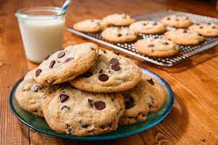

Chocolate Chip Cookies

A scrumptious plate of chocolate chip cookies
One of the best desserts to eat!
Freshly baked chocolate chip cookies with a glass of milk will have you melting with joy
Ingredients
- 1 cup butter, softend
- 1 cup white sugar
- 1 cup packed brown sugar
- 2 eggs
- 2 teaspoons vanilla extract
- 1 teaspoon baking soda
- 2 teaspoons hot water
- 1/2 teaspoon salt
- 3 cups all-purpose flour
- 2 cups milk chocolate chips
- 1 cup chopped walnuts
Directions
- Preheat oven to 350 degrees F(175 degrees C).
- Cream together the butter, white sugar, and brown sugar until smooth.
- Beat in the eggs one at a time, then stir in the vanilla.
- Dissolve baking soda in hot water. Add to batter along with salt.
- Stir in flour, chocolate chips, and nuts. Drop by large spoonfuls onto ungreased pans.
- Bake for about 10 minutes in the preheated oven, or until edges are nicely browned.
Nutrition Facts
Per Serving:
- Calories: 298
- Protein: 38.9g
- Fat: 15.6g
- Cholesterol: 25.8mg
- Sodium: 165.8mg